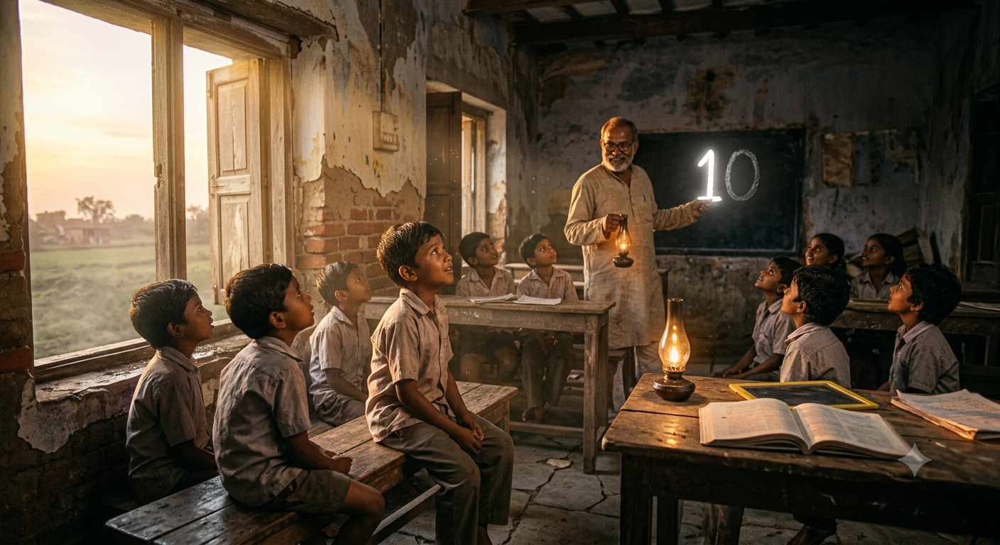
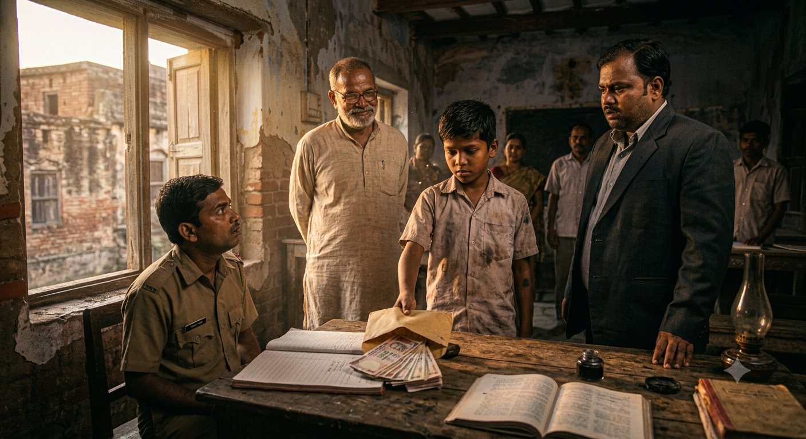
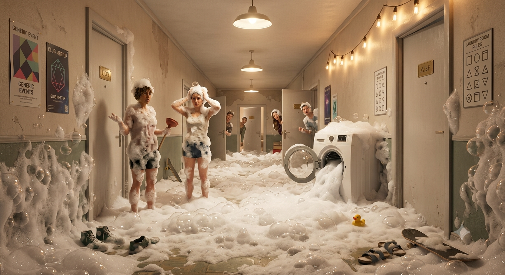
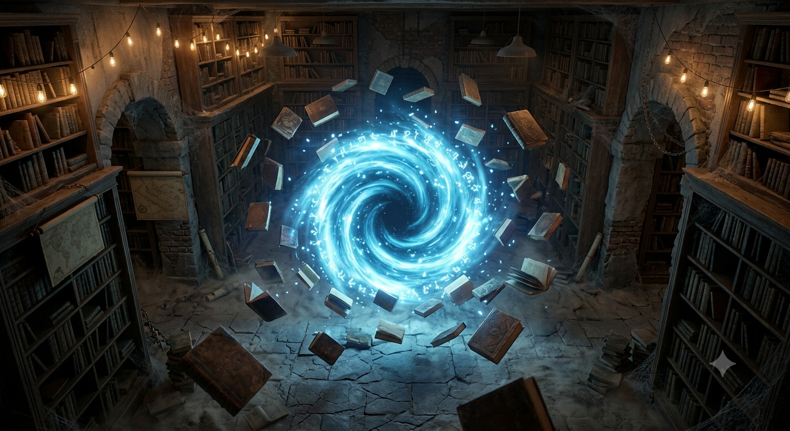
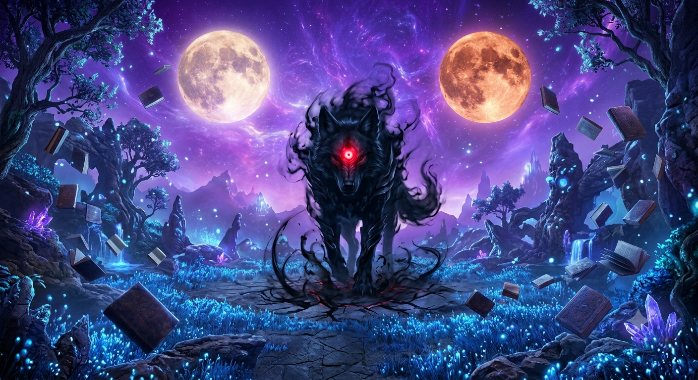
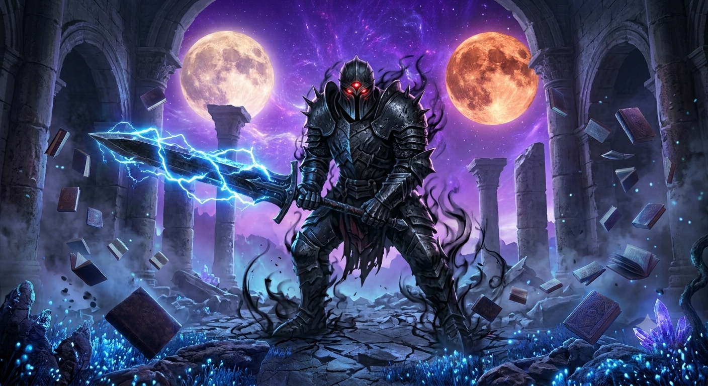
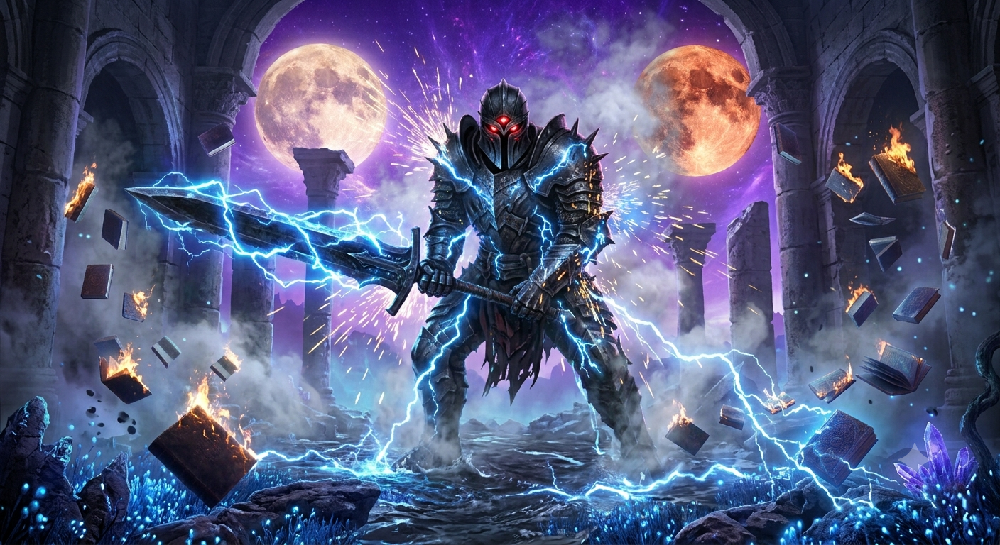
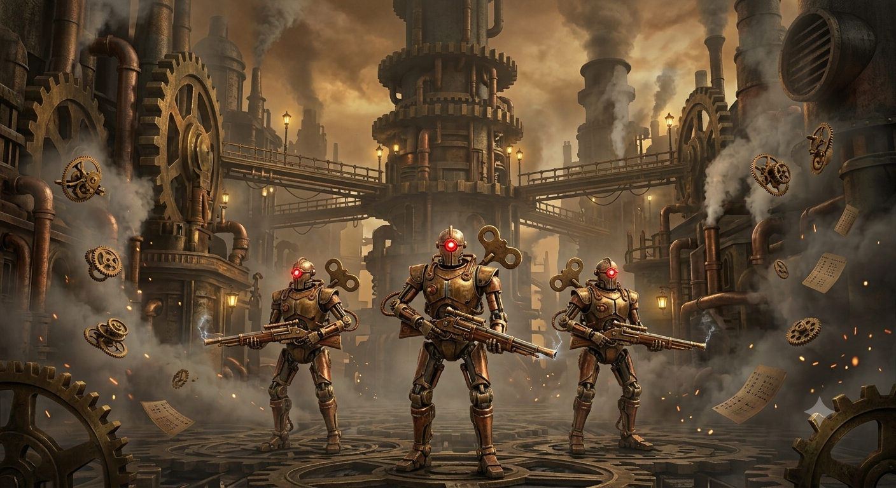

मार्ग: ज्ञान और प्रकाश

अध्याय 1: तूफ़ान में जलता हुआ दीप
आकाश में काले बादलों की घनी परत बिछी हुई थी, और दूर क्षितिज पर बिजली कौंध रही थी। शहर के उस आख़िरी कोने में बने जर्जर स्कूल के बरामदे में 'मास्टरजी' चुपचाप खड़े थे। उधड़े हुए प्लास्टर वाली दीवारें और टूटी हुई बेंचें इस बात की गवाही दे रही थीं कि इस जगह को समाज ने बहुत पहले 'नाक़ाबिल' मानकर छोड़ दिया था।
यह शहर का वही 'ई-क्लास' था, जहाँ उन बच्चों को फेंक दिया जाता था, जिन्हें हर किसी ने 'ज़ीरो' घोषित कर दिया था। कोई ग़रीबी के दलदल से उठकर आया था, तो कोई पारिवारिक परिस्थितियों का मारा हुआ। दुनिया कहती थी—"ये बच्चे कभी कुछ नहीं बन सकते।"
लेकिन मास्टरजी की आँखों में हताशा नहीं, एक गहरा संकल्प था। उनके लिए ज्ञान केवल किताबी अक्षरों का जाल नहीं था; वह तो आत्मा को गढ़ने का एक पवित्र माध्यम था।
"गुरुजी," पीछे से एक छोटे लड़के की धीमी आवाज़ आई। उसके कपड़े मैले थे और आँखों में एक अजीब सा डर था। "सब कहते हैं कि हम कभी पास नहीं होंगे। क्या हम सच में इतने बुरे हैं?"
मास्टरजी मुड़े। उन्होंने उसके छोटे, कांपते हाथों को अपने हाथों में लिया और उसके सर पर हाथ फेरते हुए मुस्कुराए।
"जब कोई मूर्तिकार किसी खुरदरे पत्थर को देखता है, तो दुनिया को उसमें सिर्फ़ एक फालतू पत्थर दिखता है," मास्टरजी ने शांत स्वर में कहा, "लेकिन मूर्तिकार जानता है कि उस पत्थर के अंदर एक सुंदर मूर्ति छिपी है। बस फालतू हिस्से को तराशना बाकी है। तुम बुरे नहीं हो, तुम बस अभी तराशे नहीं गए हो।"
मास्टरजी जानते थे कि इन बच्चों को सिर्फ़ ब्लैकबोर्ड पर गणित या विज्ञान नहीं पढ़ाना है। इन्हें इस क्रूर समाज से बचाना है, इनके भीतर छिपे आत्म-विश्वास को जगाना है, और इनकी ग़रीबी व कठिनाइयों के आगे एक अभेद्य ढाल बनकर खड़े होना है।
उन्हें भारत के उस स्वर्णिम दौर की याद आई—जब तक्षशिला और नालंदा के विशाल प्रांगणों में दूर-देशों से लोग केवल ज्ञान की प्यास बुझाने आते थे। तब गुरु अपने शिष्य की सामर्थ्य को पहचानता था, न कि उसकी जेब का वज़न। आज का दौर सिर्फ़ पैसों की दौड़ में अंधा हो चुका था, जहाँ शिक्षा एक बाज़ार बन गई थी और शिक्षक केवल एक मुलाज़िम।
"लेकिन मास्टरजी," बालक ने अपनी मासूम आँखों से पूछा, "क्या आप हमें अपने जैसा बनाएंगे?"
मास्टरजी की आँखें चमक उठीं। उन्होंने एक गहरा निश्वास लिया और कहा:
तूफ़ान अब और तेज़ हो चुका था। ठंडी हवा के थपेड़े खिड़कियों से टकरा रहे थे, लेकिन मास्टरजी के कमरे में जलता हुआ दीया बिना डिगे लौ दे रहा था। उन्हें पता था कि रास्ता लंबा है—उन्हें न केवल इन बच्चों को 'ज़ीरो से हीरो' बनाना है, बल्कि उन्हें नैतिक साहस भी देना है ताकि वे भविष्य के इस तूफ़ान में सीधे खड़े रह सकें।

अध्याय 2: सोए हुए ज़मीर की दस्तक
सुबह की पहली किरण जब जर्जर स्कूल की खिड़कियों से छनकर अंदर आई, तो धूल के कण हवा में तैरते हुए दिखाई दे रहे थे। कल रात का तूफ़ान तो थम चुका था, लेकिन शहर के लोगों के दिलों में जमा हुआ उपेक्षा का तूफ़ान अब भी जारी था।
कक्षा में कुल जमा बारह बच्चे बैठे थे। उनके चेहरों पर मुफ़लिसी की परत चढ़ी थी और आँखों में एक ही सवाल था—"क्या सच में हमारा कोई भविष्य है?"
मास्टरजी ने कोई किताब नहीं खोली। उन्होंने ब्लैकबोर्ड पर चौक से एक बड़ा सा '0' (शून्य) बनाया। कक्षा में सन्नाटा छा गया। सब एक-दूसरे का मुँह ताकने लगे।
"यह क्या है?" मास्टरजी ने शांत आवाज़ में पूछा।
"ज़ीरो, गुरुजी..." पीछे की बेंच से रमेश नाम का एक लड़का दबी आवाज़ में बोला। "दुनिया हमें यही तो कहती है। हम सब ज़ीरो हैं।"
मास्टरजी मुस्कुराए। उन्होंने चौक उठाया और उस '0' के ठीक आगे '1' लिख दिया। अब वह शून्य अचानक '10' बन चुका था।
"देखा तुमने? जब तक यह शून्य अकेला था, इसकी कोई कीमत नहीं थी। लेकिन जैसे ही इसके आगे '1' आकर खड़ा हुआ, इसका मूल्य दस गुना बढ़ गया। यह '1' कोई और नहीं, बल्कि वह ज्ञान और नैतिक साहस है जो मैं तुम्हें देना चाहता हूँ। तुम में से कोई भी बेकार नहीं है, बस तुम्हें अपनी कीमत पहचाननी है।"
तभी दरवाज़े पर एक भारी आवाज़ गूँजी, "मास्टरजी! आप इन बच्चों का समय बर्बाद कर रहे हैं।"
दरवाज़े पर शहर के एक नामी प्राइवेट स्कूल का ट्रस्टी खड़ा था। महँगी गाड़ी से उतरा वह व्यक्ति घमण्ड से मुस्कुराया और बोला, "इन ग़रीब और नाक़ाबिल बच्चों को सपने मत दिखाइए। ये बड़े होकर वही काम करेंगे जो इनके माँ-बाप करते आए हैं। शिक्षा सिर्फ़ उनके लिए है जो इसका ख़र्च उठा सकते हैं।"
लेकिन मास्टरजी अपनी जगह से डिगे नहीं। वे सीधे उस व्यक्ति के सामने जाकर खड़े हो गए। उनकी आँखों में डर नहीं, बल्कि एक असीम प्रकाश था।
"शिक्षा कोई व्यापार नहीं है," मास्टरजी ने बहुत ही गम्भीर और ढाल जैसी दृढ़ता से कहा। "जब प्राचीन काल में तक्षशिला में सुदूर देशों से शिक्षार्थी आते थे, तब वहाँ धन नहीं, ज्ञान की लगन देखी जाती थी। आप जिन बच्चों को 'ज़ीरो' कह रहे हैं, कल यही बच्चे इस देश के भविष्य का निर्माण करेंगे। और जब तक मैं ज़िंदा हूँ, मैं इनके और इनकी ग़रीबी के बीच एक ढाल बनकर खड़ा रहूँगा।"
ट्रस्टी अपमानित महसूस करते हुए बड़बड़ाता हुआ चला गया। मास्टरजी ने अपनी कक्षा की तरफ़ देखा—अब बच्चों के सिर झुके हुए नहीं थे, उनकी आँखों में एक नई चमक थी।

अध्याय 3: गुरु-द्रोह और विश्वास की कसौटीर
ट्रस्टी के जाने के बाद स्कूल में दिन बीतने लगे, लेकिन एक अनजाना ख़तरा मंडरा रहा था। मास्टरजी की लगन रंग ला रही थी—जो बच्चे कभी अक्षरों से डरते थे, अब वे देर रात तक दीये की रोशनी में गणित और विज्ञान के सूत्र सुलझाने लगे थे।
लेकिन जैसे-जैसे रोशनी बढ़ती है, अंधेरे की साज़िशें भी गहरी होने लगती हैं। ट्रस्टी ने स्कूल बंद करवाने के लिए शिक्षा विभाग में शिकायत दर्ज कराई कि मास्टरजी बच्चों को भटका रहे हैं। जाँच के लिए एक अधिकारी को भेजा जाना तय हुआ।
उसी दौरान कक्षा का एक छात्र, विक्रान्त, लालच में आ गया। ट्रस्टी ने उसे पैसों का लालच देकर मास्टरजी के ख़िलाफ़ झूठ बोलने को कहा। जाँच के दिन जब अधिकारी आए, तो विक्रान्त खड़ा हुआ। उसकी जेब में पैसों का लिफ़ाफ़ा था और मन में उलझन।
लेकिन जब उसने मास्टरजी की आँखों में देखा, तो उसे मास्टरजी की कही बात याद आ गई:
विक्रान्त का ज़मीर काँप उठा। उसने पैसों का लिफ़ाफ़ा मेज़ पर पटक दिया और सब सच बता दिया। उसने कहा, "मेरे गुरुजी ने मुझे झुकना नहीं, सही के लिए खड़े होना सिखाया है। ये मास्टरजी नहीं, बल्कि हम बच्चों के लिए एक ढाल हैं!"
अधिकारी ने जाँच बंद कर दी और मास्टरजी की सराहना की। उस शाम विक्रान्त रोते हुए गुरुजी के चरणों में गिर गया, तो मास्टरजी ने उसे गले लगाकर कहा—"भटक जाना पाप नहीं है विक्रान्त, लेकिन भटककर वापस सही रास्ते पर लौट आना ही सच्चे ज्ञान की जीत है।"

अध्याय 4: नए क्षितिज और निरंतर यात्रा
विक्रान्त के सच स्वीकारने और जाँच अधिकारी के जाने के बाद, उस जर्जर स्कूल की फ़िज़ा पूरी तरह बदल चुकी थी। जो लोग कल तक इस 'ई-क्लास' की तरफ़ देखना भी पसंद नहीं करते थे, अब वे दूर-दूर से अपने बच्चों को मास्टरजी के पास मार्गदर्शन के लिए भेजने लगे।
एक शाम रमेश ने पूछा, "गुरुजी, अब तो सब ठीक हो गया है। फिर भी आप हर दिन एक छात्र की तरह किताबें और दुनिया की उलझनें क्यों पढ़ते रहते हैं?"
अंतिम परीक्षा का परिणाम आया, तो पूरा शहर स्तब्ध रह गया। शहर की मेरिट लिस्ट में पहला स्थान रमेश का था, और बाकी सभी बारह बच्चे भी सर्वोच्च अंकों से उत्तीर्ण हुए थे। जिन्हें समाज ने 'ज़ीरो' कहा था, वे मास्टरजी की छत्रछाया में 'हीरो' बन चुके थे।
रमेश और विक्रान्त ने गुरुजी से कहा, "हम भी आपकी तरह इसी स्कूल में रहकर पढ़ाएंगे।" लेकिन मास्टरजी ने मुस्कुराते हुए इंकार कर दिया।
"नहीं! यदि तुम केवल मेरे बनाए रास्ते पर चलोगे, तो केवल मुझ तक पहुँच पाओगे। जाओ, इस दुनिया के नए क्षितिज खोजो! अपना रास्ता खुद बनाओ और वहाँ पहुँचो जहाँ तुम्हारा यह गुरु भी कभी नहीं पहुँच सका।"
मास्टरजी ने देखा कि अब उस एक दीये से बारह नए दीपक प्रज्वलित हो चुके थे, जो पूरे ब्रह्मांड को रोशन करने के लिए अपनी-अपनी यात्रा पर निकलने को तैयार थे।

अध्याय 5: हॉस्टल का झागदार तमाशा और दिमाग में गूँजती 'डिंग' की आवाज़
शहर की चकाचौंध और लंबी पक्की सड़कों पर जब रमेश और विक्रान्त ने कदम रखा, तो उन्हें लगा कि वे किसी दूसरी दुनिया में आ गए हैं। सामने था देश का सबसे प्रतिष्ठित 'एपेक्स मेट्रोपॉलिटन यूनिवर्सिटी'—जहाँ बड़े-बड़े नेताओं, उद्योगपतियों और रईसज़ादों के बच्चे पढ़ते थे। रमेश के हाथ में पुराना संदूकनुमा थैला था और विक्रान्त के कंधे पर मास्टरजी की दी हुई पुरानी गीता और विज्ञान की कुछ किताबें थीं। कॉलेज के मुख्य गेट पर ही फॉर्च्यूनर और बीएमडब्ल्यू कारों का तांता लगा था।
रात को जब वे कॉलेज के बॉयज हॉस्टल के कमरे में पहुँचे, तो रमेश को अपने कपड़े धोने थे। कमरे के बाहर एक हाई-टेक ऑटोमैटिक वाशिंग मशीन रखी थी। रमेश ने कभी ऐसी मशीन नहीं देखी थी। उसने सोचा, "यह तो कोई जादुई संदूक है!" उसने बिना सोचे-समझे उसमें एक पूरा पैकेट सर्फ का उड़ेल दिया और सारे बटन एक साथ दबा दिए।
पाँच मिनट बाद... बूप-बूप! मशीन ने ऐसा चक्रव्यूह रचा कि पलक झपकते ही गलियारे में सफेद झाग के पहाड़ निकलने लगे! देखते ही देखते पूरा कॉरिडोर स्नो-फॉल (बर्फबारी) जैसा दिखने लगा। हॉस्टल के बाकी छात्र बाहर निकल आए और हँसते-हँसते लोटपोट होने लगे। "अरे ओ गाँव के इंजीनियर! वाशिंग मशीन है या फायर एक्सटिंग्विशर?" किसी सीनियर ने आवाज़ लगाई।
रमेश और विक्रान्त घबरा गए। तभी भीड़ को चीरती हुई वहाँ एक स्मार्ट और तेज़-तर्रार लड़की आई—मान्या। उसने एक हाथ में कॉफी का मग पकड़ा था और दूसरे हाथ से मशीन का मेन प्लग खींच दिया। मान्या ने झाग में डूबे रमेश को देखा, मुस्कुराई और बोली, "लगता है आज आसमान से सीधे बादल हॉस्टल की लांड्री में उतर आए हैं! अरे भाई, इसमें कपड़े धोने थे, बादलों की फैक्ट्री नहीं चलानी थी।"
विक्रान्त को गुस्सा आया, लेकिन रमेश अपनी सीधी मासूमियत पर खुद हँस पड़ा। मान्या को उन दोनों का यह सीधापन और बिना बात का अहंकार न होना भा गया। उसने रुमाल से रमेश के माथे पर लगा सर्फ पोछते हुए कहा, "चलो, नए हो... माफ किया! कल तुम्हें सिखाती हूँ कि इस दुनिया के गैजेट्स कैसे चलाते हैं।" इस तरह, उस झाग के बीच से उनके शहर के सफर की एक खट्टी-मीठी शुरुआत हुई।
रात के दो बज रहे थे। हॉस्टल का कमरा शांत था। रमेश अपनी खिड़की के पास बैठकर आसमान के तारों को देख रहा था। उसे अपने गाँव का वो जर्जर स्कूल और मास्टरजी की बातें याद आ रही थीं। तभी अचानक... 嗡... (एक अजीब सी सूक्ष्म कंपन या हुमिंग साउंड) रमेश के सिर के अंदर एक अजीब सी सनसनी हुई। उसके दिमाग की परतों में कोई अदृश्य तारा टिमटिमा उठा। हवा में कोई भौतिक चीज़ नहीं थी, लेकिन उसकी आँखों के ठीक सामने एक नीली और पारदर्शी स्क्रीन (Holographic Blue Screen) उभर कर आ गई—ठीक वैसी जैसी किसी साइ-फि मूवी में होती है! उस पर जादुई और चमकदार अक्षरों में लिखा था:
[ User: Ramesh ]
[ Class: Elemental Controller (Locked) ]
[ System Status: Basic Awakening Initialized ]
[ New Quest Unlocked: कैंपस के नीचे दबे हुए 'प्राचीन वैचारिक कोर' (Ancient Ideological Core) की ऊर्जा को महसूस करें और उसका स्रोत खोजें। ]
रमेश उछलकर बिस्तर से खड़ा हो गया। उसने हड़बड़ा कर विक्रान्त को जगाया, "विक्रान्त... उठ! देख... मेरी आँखों के सामने कुछ नीले अक्षर तैर रहे हैं! क्या मैं पागल हो गया हूँ?" विक्रान्त ने अपनी आँखें मलीं और जैसे ही उसने देखना चाहा, उसके भी दिमाग के अंदर एक और स्क्रीन चमक उठी:
[ Class: Unbreakable Berserker (Locked) ]
[ Warning: High-frequency energy anomaly detected near the Old Campus Library basement. ]
कमरे की बत्ती अचानक झिलमिलाने लगी। हॉस्टल के बाहर जमीन के बहुत नीचे से एक भारी और रहस्यमयी गूँज सुनाई दी—मानो सदियों से सोया हुआ कोई विशालकाय यंत्र अब जाग रहा हो। विक्रान्त की आँखें फैल गईं। उसने धीरे से कहा, "रमेश... ये कोई साधारण कॉलेज नहीं है। और मास्टरजी हमें यूं ही यहाँ नहीं भेजने वाले थे... इसके पीछे कोई बहुत बड़ा राज़ है!"

अध्याय 6: आधी रात का रहस्य और 'डार्क गिल्ड' की आहट
रात के सन्नाटे में रमेश और विक्रान्त की साँसें तेज़ हो गई थीं। उनकी आँखों के सामने तैरती पारदर्शी नीली स्क्रीन (Blue Screen) बार-बार एक ही लाल चेतावनी दिखा रही थी:
"विक्रान्त, ये 'एक्सपी' (EXP) क्या है? और यह नीली स्क्रीन... क्या मास्टरजी ने हमारे दिमाग में कोई चिप लगा दी थी?" रमेश ने काँपती आवाज़ में पूछा। विक्रान्त ने अपना मुक्का ज़ोर से कस लिया, "जो भी है रमेश, मास्टरजी कभी हमारा बुरा नहीं सोचेंगे। अगर यह नीली बत्ती हमें लाइब्रेरी के तहखाने में जाने को कह रही है, तो हमें वहाँ जाना होगा। वैसे भी मुझे यहाँ कुछ गड़बड़ लग रही है।"
दोनों दबे पाँव हॉस्टल से निकले। बाहर ओस गिर रही थी और कैंपस का बड़ा सा 'ओल्ड लाइब्रेरी' (Old Library) भवन किसी डरावने किले की तरह अंधेरे में डूबा था। जैसे ही वे लाइब्रेरी के पीछे एक पुराने, जंग लगे लोहे के दरवाजे के पास पहुँचे, उन्हें एक आहट सुनाई दी। विक्रान्त तुरंत एक पिलर के पीछे छिप गया और रमेश को भी खींच लिया।
सामने कोई खड़ा था, जो अपने हाथों में एक हाई-टेक टैबलेट लिए उस जंग लगे दरवाज़े को हैक (Hack) करने की कोशिश कर रहा था। तभी एक जानी-पहचानी आवाज़ आई, "उफ्फ... इस दरवाज़े में 19वीं सदी का ताला है और 22वीं सदी की एनक्रिप्शन! अजीब बात है।" वह मान्या थी! वही लड़की जिसने सुबह रमेश की झाग-मशीन (वाशिंग मशीन) रोकी थी।
रमेश और विक्रान्त पिलर के पीछे से बाहर निकले। रमेश ने हैरान होकर कहा, "मान्या? तुम इतनी रात को यहाँ क्या कर रही हो?" मान्या चौंक कर पीछे मुड़ी, लेकिन फिर मुस्कुराई। "अरे, तुम दोनों? गाँव के इंजीनियर! सच बताऊँ... मैं यहाँ अपने टैबलेट में आ रहे कुछ अजीब सिग्नल्स का पीछा करते हुए आई हूँ। मुझे लगता है इस कॉलेज के नीचे कुछ बहुत पुराना और शक्तिशाली छिपा है।" तभी मान्या के दिमाग में भी 'डिंग' की आवाज़ हुई और उसे भी एक नीली स्क्रीन दिखाई दी:
तीनों ने एक-दूसरे को अचरज से देखा। अब यह बात साफ थी कि यह सिस्टम उन लोगों को चुन रहा था, जिनके अंदर कुछ खास करने की जिज्ञासा और वैचारिक क्षमता थी। मान्या ने अपने टैबलेट की मदद से वह पुराना ताला खोला और तीनों लाइब्रेरी के घने, धूल भरे तहखाने में उतर गए। सीढ़ियाँ ख़त्म होते ही, उनके सामने एक विशाल, चमकता हुआ गोल घेरा (Portal) था। यह पोर्टल नीली और बैंगनी ऊर्जा से घूम रहा था। रमेश की सिस्टम स्क्रीन फिर चमक उठी:
[ Reward: 100 EXP ]
[ Level Up! Ramesh is now Level 1: Awakened. Class Skill Unlocked: 'Spark of Control' (Basic Elemental Manipulation) ]
उसी समय, विक्रान्त को भी लेवल 1 का नोटिफिकेशन मिला और उसकी क्लास स्किल अनलॉक हुई—'ब्लू ऑरा (Blue Aura)'। तभी तहखाने के उस पार से एक भारी, खौफनाक आवाज़ गूँजी, "तो आ गए कुछ नए चूहे, इस सिस्टम का हिस्सा बनने?"
तीनों ने मुड़कर देखा। अंधेरे में से प्रोफेसर वर्मा बाहर निकला, लेकिन वह इंसान जैसा नहीं लग रहा था! उसकी आँखों में एक अजीब सी लाल चमक (Crimson Glow) थी और उसके हाथों की नसें काले रंग की हो चुकी थीं। प्रोफेसर वर्मा ने ठहाका लगाया, "मैं 'द मल्टीवर्सल डार्क गिल्ड' का एक अदना सा मोहरा हूँ। मुझे इस पोर्टल को बंद करने और इस सिस्टम के नए यूज़र्स को खत्म करने का काम मिला है। तुम्हारे वो मास्टरजी हमें मूर्ख नहीं बना सकते!"
प्रोफेसर ने हवा में हाथ घुमाया और अचानक तहखाने की पुरानी, भारी अलमारियाँ हवा में उठीं और तेज़ी से रमेश और विक्रान्त की ओर उड़ने लगीं! (टेलीकिनेसिस - Telekinesis)। मान्या चिल्लाई, "विक्रान्त, बचो!" लेकिन इस बार विक्रान्त डरा नहीं। उसके अंदर का 'Unbreakable Berserker' जाग उठा था। उसकी आँखों में नीला रंग चमका और उसके शरीर के चारों ओर एक हल्की नीली ऊर्जा (Blue Aura) का कवच बन गया। विक्रान्त ने आगे बढ़कर उड़ती हुई भारी अलमारी पर एक ज़ोरदार मुक्का मारा।
क्रैशशश! विशाल लकड़ी की अलमारी हवा में ही चकनाचूर हो गई! विक्रान्त अपनी ताकत देखकर खुद हैरान था। इधर, प्रोफेसर वर्मा ने रमेश की ओर एक नुकीला लोहे का पाइप फेंका। रमेश घबराया, लेकिन उसे अपनी नई स्किल 'Spark of Control' याद आई। उसने आँखें बंद कीं और हवा में हाथ उठाया। अचानक पाइप के आस-पास का तापमान तेज़ी से बढ़ा, और वह लोहे का पाइप रमेश से महज़ दो इंच दूर हवा में रुक गया—उसमें से हल्का धुआँ निकल रहा था!
प्रोफेसर वर्मा हैरान रह गया, "नहीं... तुम अभी सिर्फ लेवल 1 पर हो, तुम डार्क गिल्ड की शक्ति का मुकाबला नहीं कर सकते!" इससे पहले कि प्रोफेसर कोई और वार करता, रमेश, विक्रान्त और मान्या के दिमाग में एक साथ एक नई और बहुत शक्तिशाली चेतावनी (System Warning) आई, जिसकी आवाज़ साक्षात मास्टरजी की तरह लग रही थी:
घूमता हुआ नीले रंग का पोर्टल अब पहले से कहीं ज़्यादा बड़ा हो चुका था और उसमें से तेज़ हवा अंदर की ओर खींच रही थी। रमेश ने चिल्लाकर कहा, "कूदो, अंदर कूदो!" प्रोफेसर वर्मा चीखा, "नहीं!" और उसने उनकी ओर छलांग लगाई। लेकिन रमेश, विक्रान्त और मान्या ने एक-दूसरे का हाथ पकड़ा और उस चमकदार नीले पोर्टल में छलांग लगा दी। उनके घुसते ही पोर्टल एक जोरदार धमाके के साथ गायब हो गया, और प्रोफेसर वर्मा तहखाने की ज़मीन पर औंधे मुँह गिर पड़ा। अब वे तीनों पृथ्वी की 'लेवल 0' दुनिया से बाहर, एक बिल्कुल नए और अनजान समानांतर ब्रह्मांड (Parallel Dimension) के रास्ते पर थे...

अध्याय 7: दो चाँद वाला आसमान और मास्टरजी का गुप्त संदेश
नीले पोर्टल के अंदर घुसते ही रमेश, विक्रान्त और मान्या को लगा जैसे वे किसी वाशिंग मशीन के अंदर गोल-गोल घूम रहे हों (रमेश को तो सच में अपना सर्फ वाला कांड याद आ गया!)। उनके कानों में तेज़ हवा की सीटी बज रही थी और पलक झपकते ही वे तीनों धड़ाम से एक ठोस, लेकिन बेहद मुलायम ज़मीन पर आ गिरे।
"उफ्फ... मेरी तो कमर ही टूट गई!" मान्या कराहते हुए उठी। विक्रान्त ने झटके से उठकर रमेश को सहारा दिया। जब तीनों ने आँखें खोलकर अपने आस-पास देखा, तो उनके होश उड़ गए। वे अब पृथ्वी पर नहीं थे। वे एक विशाल, नीले रंग की चमकती हुई घास वाले मैदान में खड़े थे। आसमान का रंग हल्का बैंगनी था और सबसे हैरान करने वाली बात—आसमान में एक नहीं, बल्कि दो चाँद चमक रहे थे! दूर-दूर तक अजीबोगरीब घुमावदार पेड़ थे, जिनकी पत्तियाँ सोने की तरह चमक रही थीं। तभी तीनों के दिमाग में सिस्टम की आवाज़ एक साथ गूँजी:
[ Atmosphere: Breathable. Gravity: 1.2x (पृथ्वी से थोड़ा भारी) ]
[ Mana/Energy Density: High. ]
[ Status Update: मान्या का 'टैबलेट' सिस्टम के साथ सिंक्रनाइज़ (Synchronize) किया जा रहा है... ]
मान्या के हाथ में जो टैबलेट था, वह अचानक पिघलने लगा और एक चमकदार सिल्वर बैंड (Holographic Bracer) में बदल कर उसकी कलाई पर फिट हो गया। उसमें से अब हवा में 3D स्क्रीन निकल रही थी। "वाह! यह तो मार्वल की फिल्मों के आयरन-मैन वाले गैजेट से भी ज़्यादा कूल है!" मान्या खुशी से चहक उठी। उसकी 'टेक्नो-रेंजर' क्लास अब पूरी तरह एक्टिवेट हो चुकी थी।
अचानक रमेश की आँखों के सामने वाली सिस्टम स्क्रीन चमकी और उसमें से एक छोटा सा सोने के रंग का प्रकाश बाहर निकला। वह प्रकाश हवा में फैलकर एक इंसान की आकृति में बदल गया। यह कोई और नहीं, मास्टरजी का 3D होलोग्राम था! रमेश और विक्रान्त की आँखों में आँसू आ गए। "गुरुजी!" दोनों एक साथ बोले।
होलोग्राम वाले मास्टरजी मुस्कुराए (यह पहले से रिकॉर्ड किया हुआ संदेश था)। "मेरे बच्चों, अगर तुम यह संदेश देख रहे हो, तो इसका मतलब है कि 'द मल्टीवर्सल डार्क गिल्ड' ने पृथ्वी के उस जर्जर स्कूल के नीचे का राज़ ढूँढ लिया है और तुम लोग इस पोर्टल से भाग निकले हो। डरो मत, मैंने तुम्हें जो 'ज़ीरो' से 'हीरो' बनने की शिक्षा दी थी, वह तुम्हें इसी दिन के लिए तैयार करने के लिए थी।"
मास्टरजी की आवाज़ गंभीर हो गई, "तुम अभी 'ऐथेलगार्ड' (Aethelgard) नाम की दुनिया में हो। यहाँ हज़ारों साल पहले ज्ञान और जादू का राज था, लेकिन अज्ञानता और क्रूरता ने इस दुनिया को बर्बाद कर दिया है। तुम्हारा लेवल अभी बहुत कम है। तुम्हें यहाँ की प्राचीन लाइब्रेरी से 'स्क्रॉल ऑफ़ इग्निस' (Scroll of Ignis) खोजना है। ज्ञान पढ़ोगे, तो लेवल बढ़ेगा, लेवल बढ़ेगा तो ताकत मिलेगी। याद रखना... यहाँ के 'शैडो-बीस्ट्स' (छाया-दानव) से बचकर रहना। तुम्हारी यात्रा अब शुरू होती है। विजय भव!" इतना कहकर होलोग्राम गायब हो गया।
मास्टरजी का संदेश खत्म होते ही पीछे की सुनहरी झाड़ियों में कुछ सरसराहट हुई। विक्रान्त तुरंत सतर्क हो गया। अंधेरे में से दो लाल चमकती हुई आँखें बाहर आईं। यह पृथ्वी का कोई जानवर नहीं था। यह एक 'शैडो-वुल्फ' (Shadow-Wolf) था—एक विशाल भेड़िया जिसके शरीर से काला धुआँ निकल रहा था और उसके दाँत लोहे की तरह तेज़ थे। मान्या ने तुरंत अपनी कलाई के गैजेट से उसे स्कैन किया।
[ Weakness: Fire (आग) & The Glowing Red Eye (उसकी लाल आँख) ]
"रमेश, विक्रान्त! यह लेवल 2 का दानव है, यह आग से डरता है और इसकी लाल आँख इसकी कमज़ोरी है!" मान्या ने चिल्लाकर इन्फॉर्मेशन दी। भेड़िए ने ज़ोरदार दहाड़ मारी और विक्रान्त की तरफ छलांग लगा दी। विक्रान्त ने पीछे हटने के बजाय अपनी 'अनब्रेकेबल ऑरा' (Unbreakable Aura) एक्टिवेट की। उसके शरीर पर नीला कवच बन गया। उसने दोनों हाथ क्रॉस किए और भेड़िए की टक्कर को सीधा सीने पर झेल लिया! धड़ाम! भारी ग्रेविटी के बावजूद विक्रान्त अपनी जगह से एक इंच भी नहीं हिला।
"रमेश, अब तेरी बारी!" विक्रान्त चिल्लाया। रमेश ने अपना ध्यान केंद्रित किया। उसने अपनी स्किल 'Spark of Control' का इस्तेमाल किया। उसने भेड़िए के पैरों के नीचे की सूखी, नीली घास को अपने दिमाग की ऊर्जा से घर्षण (Friction) पैदा करके जला दिया। अचानक लगी आग से शैडो-वुल्फ घबराकर पीछे हटा।
"मान्या, आँख!" रमेश ने इशारा किया। मान्या ने अपनी 'ईगल आई' (Eagle Eye) स्किल का इस्तेमाल किया। उसने ज़मीन से एक नुकीला पत्थर उठाया, उसकी आँख का निशाना साधा और पूरी ताकत से फेंक दिया। पत्थर सीधे भेड़िए की चमकती लाल आँख पर लगा! भेड़िया दर्द से तड़पा। यह मौका देखते ही विक्रान्त ने हवा में छलांग लगाई और अपने नीले ऑरा से भरे मुक्के से भेड़िए के सिर पर एक ज़ोरदार प्रहार किया—क्रैक!
भेड़िया ज़मीन पर गिरकर काले धुएं में बदल गया और गायब हो गया। उसकी जगह ज़मीन पर एक छोटा सा चमकता हुआ लाल पत्थर (Mana Crystal) रह गया। तीनों की स्क्रीन पर एक साथ नोटिफिकेशन आया:
[ EXP +50 to all members. ]
[ Loot Acquired: Low-Level Fire Crystal (आग का पत्थर) ]
तीनों ने राहत की साँस ली। वे एक लेवल 2 के दानव को हरा चुके थे! रमेश ने वह लाल पत्थर उठा लिया, जिससे उसे हल्की गर्माहट महसूस हो रही थी। तभी मान्या ने अपनी दूरबीन वाली आँखों (Eagle Eye) से दूर पहाड़ की तरफ देखा और उसके चेहरे की रंगत उड़ गई। "दोस्तों..." मान्या ने काँपती आवाज़ में कहा, "मुझे नहीं लगता कि यहाँ सिर्फ जानवर हैं... वहाँ सामने देखो!"
रमेश और विक्रान्त ने उस दिशा में देखा। दूर एक विशाल, खंडहर हो चुके प्राचीन शहर की दीवारें दिख रही थीं। लेकिन उस दीवार के ऊपर अजीबोगरीब लोहे के कवच पहने कुछ सैनिक खड़े थे... और उन्होंने अपनी चमकती हुई तोपों का मुँह बिल्कुल रमेश, विक्रान्त और मान्या की तरफ घुमा रखा था!

अध्याय 8: तोपों की गूँज और परछाइयों का खिलाड़ी
दीवार पर खड़े सैनिकों ने जैसे ही तोपों का रुख रमेश, विक्रान्त और मान्या की तरफ किया, तोपों के मुहाने से लाल रंग की भयानक ऊर्जा इकट्ठा होने लगी। "भागो!" मान्या चीखी। विक्रान्त तुरंत आगे आया और अपनी नीली ढाल (Unbreakable Aura) को पूरी ताकत से एक्टिवेट कर दिया। लेकिन तभी उसकी आँखों के सामने एक लाल रंग की सिस्टम वार्निंग चमक उठी:
इससे पहले कि वे लाल गोले उन पर गिरते, दुनिया अचानक ब्लैक एंड व्हाइट हो गई। उनके चारों ओर एक घना काला धुआँ छा गया। तोपों से निकले ऊर्जा के गोले उनके शरीर के आर-पार ऐसे निकल गए जैसे वे कोई भूत या परछाईं हों, और पीछे के जंगल में जाकर एक जोरदार धमाके के साथ फट गए! "क्या... क्या हम मर गए?" रमेश ने अपनी आँखें कसकर बंद किए हुए पूछा। "अभी नहीं मरे हो, बस छिप गए हो," अंधेरे में से एक बेहद ठंडी और शांत आवाज़ आई।
धुएं के बीच से एक लड़का बाहर निकला। उसने एक काली हुडी (Hoodie) पहनी हुई थी और उसके कदम इतने शांत थे कि ज़मीन पर पड़े सूखे पत्तों की भी आवाज़ नहीं आ रही थी। "कबीर?!" रमेश और विक्रान्त एक साथ चौंके। यह उनकी क्लास का सबसे खामोश लड़का था, जिसकी आवाज़ उन्होंने कॉलेज में शायद ही कभी सुनी थी। मान्या के कलाई-गैजेट ने तुरंत उसे स्कैन किया:
[ Class: Shadow Walker (Illusionist) ]
[ Level: 2 ]
विक्रान्त ने राहत की साँस ली, "तू यहाँ कैसे पहुँचा भाई?" कबीर ने अपनी हुडी थोड़ी पीछे की और बिना कोई भाव दिखाए कहा, "मैं ओल्ड लाइब्रेरी में सो रहा था। तुम लोग अजीब से नीले पोर्टल में कूदे, तो मेरी नींद खुल गई। मैं भी पीछे-पीछे आ गया। पिछले दो घंटे से यहाँ इन लोहे के डिब्बों (सैनिकों) की जासूसी कर रहा हूँ। अभी मैंने अपनी 'शैडो मर्ज' (Shadow Merge) स्किल का इस्तेमाल करके हम सबको एक इल्यूज़न (भ्रम) में डाल दिया है। उनके लिए हम गायब हो चुके हैं, लेकिन हमें यहाँ से जल्दी निकलना होगा।" कबीर की परछाइयों वाली ढाल के अंदर छिपे हुए, चारों ने चुपचाप उस प्राचीन शहर की टूटी हुई दीवारें फांदीं और अंदर घुस गए।
अंदर का शहर बिल्कुल वीरान और डरावना था। हर तरफ टूटी हुई मूर्तियाँ और अजीब भाषा में लिखी गई प्राचीन किताबें बिखरी पड़ी थीं। मान्या ने अपने टैबलेट के रडार का इस्तेमाल किया और वे एक विशाल, गुंबददार इमारत तक पहुँचे—'ज्ञान मंदिर' (The Ancient Library)। लाइब्रेरी के बीचों-बीच एक पत्थर की वेदी (Altar) थी। उस वेदी के ऊपर एक पुराना, लेकिन चमकता हुआ पन्ना हवा में तैर रहा था—यही मास्टरजी का बताया हुआ 'स्क्रॉल ऑफ़ इग्निस' था!
लेकिन उस वेदी के चारों ओर एक जादुई ऊर्जा का लाल घेरा (Forcefield) था और उसमें एक छोटा सा गड्ढा बना हुआ था। रमेश को तुरंत समझ आ गया। उसने अपनी जेब से वह लाल पत्थर (Low-Level Fire Crystal) निकाला जो उन्हें शैडो-वुल्फ को मारने पर मिला था, और उसे उस गड्ढे में रख दिया। क्लिक! घेरा टूट गया। रमेश ने जैसे ही उस स्क्रॉल को छुआ, वह पन्ना अचानक पिघल कर एक सुनहरी रोशनी में बदल गया और सीधे रमेश के सीने में समा गया! अचानक रमेश के दिमाग में सिस्टम प्रॉम्प्ट्स की बाढ़ आ गई:
[ System Update: Ancient Knowledge Acquired. ]
[ User: Ramesh has Leveled Up to Level 3 (Scholar) ]
[ New Skill Unlocked: 'Ignis Burst' (विनाशकारी आग का गोला) ]
[ Brain Capacity Expanded by 20% ]
रमेश की आँखों से कुछ सेकंड के लिए आग की लपटें निकलीं। उसे ऐसा महसूस हुआ जैसे इस दुनिया के सारे भौतिक और रासायनिक सूत्र (Physics and Chemistry Formulas) उसे एक पल में समझ आ गए हों। ज्ञान सीधे ताकत में बदल रहा था! लेकिन इस 'लेवल अप' की ऊर्जा इतनी ज़बरदस्त थी कि रमेश के शरीर से एक विशाल रोशनी का खंभा निकला, जिसने लाइब्रेरी की छत फाड़कर आसमान को रोशन कर दिया।
कबीर ने टूटी हुई खिड़की से बाहर देखा और उसकी हमेशा शांत रहने वाली आवाज़ में पहली बार खौफ सुनाई दिया, "दोस्तों... रोशनी की वजह से मेरा इल्यूज़न टूट गया है। और मुझे लगता है कि हमने इस शहर के सबसे खतरनाक लोगों को दावत दे दी है।" लाइब्रेरी के बाहर भारी जूतों की आवाज़ें आ रही थीं। अचानक, लाइब्रेरी का विशाल लोहे का दरवाज़ा एक ही लात में उड़कर दूर जा गिरा! सामने एक 10 फुट लंबा, काले और कंटीले कवच में लिपटा हुआ कमांडर खड़ा था। उसकी आँखों से नीली आग निकल रही थी और उसके हाथ में एक भारी तलवार थी जिस पर बिजली कड़क रही थी। चारों की सिस्टम स्क्रीन एक साथ लाल रंग में चमकने लगी:
[ Name: Aethelgard Executioner ]
[ Level: 10 (Commander Class) ]
[ Chances of Survival: 0.1% ]
कमांडर ने अपनी बिजली वाली तलवार ज़मीन पर पटकी, जिससे पूरी ज़मीन काँप उठी और उसने एक भयानक, राक्षसी आवाज़ में कहा, "पृथ्वी के कीड़ो... तुम्हारा खेल यहीं खत्म होता है!"

अध्याय 9: मौत से आँख-मिचौली और मास्टरजी का 'हिडन कोड'
लाइब्रेरी की हवा भारी हो गई थी। 10 फुट ऊँचे 'ऐथेलगार्ड एक्सिक्यूशनर' की नीली आग उगलती आँखों को देखकर चारों के रोंगटे खड़े हो गए। उसकी बिजली वाली भारी तलवार से चिंगारियाँ गिर रही थीं, जो ज़मीन को जला रही थीं। सिस्टम स्क्रीन लगातार लाल रंग में ब्लिंक कर रही थी:
[ Suggestion: RUN! ]
"भागने का कोई रास्ता नहीं है!" मान्या ने अपने गैजेट को देखते हुए चिल्लाकर कहा। "इस राक्षस ने पूरे इलाके को सील कर दिया है!" एक्सिक्यूशनर ने एक खौफनाक हँसी हँसी और अपनी भारी तलवार हवा में घुमाई। "तुम जैसे कीड़े इस ज्ञान के लायक नहीं हैं!" उसने पूरी ताकत से तलवार रमेश के सिर पर दे मारी।
"रमेश, हट!" विक्रान्त दहाड़ा और रमेश को धक्का देकर खुद आगे आ गया। उसने अपनी पूरी शक्ति लगाकर 'अनब्रेकेबल ऑरा' को अपनी बाहों में केंद्रित किया और वार रोकने की कोशिश की। क्लैशशश! लेकिन लेवल 2 और लेवल 10 के बीच का अंतर बहुत बड़ा था। विक्रान्त का नीला कवच काँच की तरह चटक गया और वह बिजली के झटके से उड़कर दूर एक दीवार से जा टकराया। उसके मुँह से खून की एक बूँद छलक आई।
"विक्रान्त!" रमेश चीखा। उसे अपने अंदर की आग (Ignis) उबलती हुई महसूस हुई। "कबीर, मान्या! मास्टरजी ने क्या कहा था? 'सच्चा ज्ञान शांत रहना सिखाता है, कमज़ोर होना नहीं।' हमें ताकत नहीं, विज्ञान और दिमाग का इस्तेमाल करना होगा! मान्या, जल्दी से इस जगह को स्कैन करो, मुझे पानी चाहिए... बहुत सारा पानी!"
मान्या का दिमाग बिजली की तरह चला। उसने तुरंत अपनी 'टेक-लिंक' और 'ईगल आई' का इस्तेमाल करके लाइब्रेरी के फर्श के नीचे स्कैन किया। "रमेश! इस पत्थर के फर्श के ठीक बीस फीट नीचे इस प्राचीन शहर का एक पुराना पानी का नाला (Aqueduct) है, जिसमें अभी भी पानी बह रहा है!"
रमेश के चेहरे पर एक हल्की सी मुस्कान आ गई (The Smile Moment)। "परफेक्ट! गाँव का इंजीनियर अब अपना असली जुगाड़ दिखाएगा। कबीर, मुझे तीन सेकंड दे!" कबीर ने बिना एक शब्द कहे हामी भरी। उसने अपनी काली हुडी से मुँह ढका और 'शैडो मर्ज' (Shadow Merge) का इस्तेमाल किया। अचानक पूरे कमरे में धुंआ फैल गया और एक्सिक्यूशनर के सामने एक नहीं, बल्कि रमेश के पाँच इल्यूज़न (भ्रम) प्रकट हो गए, जो उसे चिढ़ा रहे थे।
राक्षस गुस्से से पागल हो गया। "छलावे मुझे नहीं रोक सकते!" उसने अपनी बिजली की तलवार ज़मीन पर पटक कर चारों तरफ घुमाई। सारे इल्यूज़न एक झटके में कट कर धुंआ हो गए, लेकिन असली रमेश वहाँ था ही नहीं! असली रमेश राक्षस के ठीक पीछे खड़ा था। "हे डिब्बे! ऊपर देख!"
एक्सिक्यूशनर ने जैसे ही पीछे मुड़कर देखा, रमेश ने दोनों हाथ फर्श की तरफ किए और अपनी नई लेवल 3 की शक्ति को पूरी ताकत से खोल दिया—'Ignis Burst!' रमेश के हाथों से आग का एक भयंकर बवंडर निकला, जो सीधा एक्सिक्यूशनर पर नहीं, बल्कि उसके पैरों के नीचे वाले पत्थर के फर्श पर जाकर लगा। 2000 डिग्री की भयंकर गर्मी से फर्श का पत्थर पिघलने लगा और एक बड़ा सा गड्ढा बन गया।
अगले ही पल, नीचे बह रहे नाले का ठंडा पानी प्रेशर के साथ फव्वारे की तरह ऊपर आ गया। एक्सिक्यूशनर का भारी लोहे का कवच और पैर पूरी तरह पानी में भीग गए। "अब तू गया, ओवरसाइज़्ड बैटरी!" रमेश पीछे कूदते हुए चिल्लाया। राक्षस को कुछ समझ नहीं आया। उसने गुस्से में रमेश को मारने के लिए अपनी बिजली वाली तलवार को फिर से चार्ज किया। लेकिन मास्टरजी का सिखाया हुआ 'विज्ञान' अब अपना काम कर चुका था।
जैसे ही तलवार से बिजली निकली, वह हवा में जाने के बजाय सीधे ज़मीन पर फैले पानी में मिल गई। पानी बिजली का सुचालक (Good Conductor) होता है, और वह राक्षस सिर से पैर तक लोहे और पानी में भीगा था! ज़ज़ज़ज़ज़ज़-बूम!!! राक्षस की अपनी ही लेवल 10 की विनाशकारी बिजली पलट कर उसके अपने कवच में दौड़ गई! एक भयानक शॉर्ट-सर्किट हुआ। राक्षस तड़पने लगा, उसके कवच से नीली और सफेद आग की लपटें निकलने लगीं और वह एक गगनभेदी चीख के साथ ज़मीन पर धड़ाम से गिर पड़ा। उसका शरीर राख बन गया।
चारों की सिस्टम स्क्रीन एक साथ खुशी से चमक उठी, और अजीब-अजीब आवाज़ें आने लगीं:
[ Bonus 'Gyan' Multiplier Applied: Science > Brute Force. ]
[ EXP +5000 to all members! ]
[ Level Up! Vikrant reaches Level 5 (Iron-Body Berserker) ]
[ Level Up! Manya reaches Level 4 (Tactical Sniper) ]
[ Level Up! Kabir reaches Level 4 (Phantom Weaver) ]
[ Level Up! Ramesh reaches Level 5 (Elemental Adept) ]
मान्या खुशी से उछल पड़ी और उसने दौड़कर रमेश को ताली दी। कबीर ने जाकर घायल विक्रान्त को उठाया, जिसके घाव अब लेवल अप होने के कारण जादुई तरीके से भर रहे थे। तभी राक्षस की राख में से एक सुनहरी चमक उठी। ज़मीन पर एक भारी, काले रंग का बक्सा (Loot Chest) पड़ा था। रमेश ने जैसे ही उस बक्से को खोला, उसके अंदर दो चीजें थीं। पहली—एक अजीब सी नीली चमकती हुई चाबी (Dimensional Key)। और दूसरी—मास्टरजी की हस्तलिपि (Handwriting) में लिखा हुआ एक फटा हुआ पन्ना!
उस पन्ने पर लिखा था: "शाबाश बच्चों! मुझे पता था कि तुम लोग विज्ञान और एकता का रास्ता चुनोगे। यह चाबी तुम्हें 'लेवल 2 ज़ोन: द क्लॉकवर्क सिटी' (The Clockwork City) में ले जाएगी। लेकिन सावधान रहना, वहाँ के लोग इंसानी भावनाओं को नहीं, सिर्फ मशीनी दिमाग को मानते हैं। मेरा एक पुराना दोस्त वहाँ कैद है, उसे ढूँढो। - गार्जियन।" चारों ने एक-दूसरे को देखा। उनका सफर अभी खत्म नहीं हुआ था, यह तो बस शुरुआत थी। उन्होंने चाबी को हवा में घुमाया और उनके सामने एक नया, सुनहरे रंग का पोर्टल खुल गया, जिसमें से टिक-टॉक, टिक-टॉक करती मशीनों की आवाज़ आ रही थी।

अध्याय 10: टिक-टॉक की दुनिया और भावनाओं की कीमत
सुनहरे पोर्टल से बाहर निकलते ही रमेश, विक्रान्त, मान्या और कबीर एक ऐसी दुनिया में आ गिरे, जो ऐथेलगार्ड के नीले घास के मैदानों से बिल्कुल अलग थी। यहाँ आसमान काले और भूरे धुएं से भरा था। ज़मीन मिट्टी की नहीं, बल्कि लोहे और पीतल के विशाल गियर्स (Gears) से बनी थी, जो लगातार एक-दूसरे में फँसकर घूम रहे थे। क्लैंक... टिक... टॉक... की आवाज़ हर तरफ गूँज रही थी। चारों के सामने एक विशाल शहर था, जिसकी इमारतें चिमनियों, पाइपों और घूमते हुए पहियों से बनी थीं। यह था—द क्लॉकवर्क सिटी (The Clockwork City)।
[ Atmosphere: High Smog. Breathable, but toxic over time. ]
[ Ruling Faction: The Logic Nexus (मशीनी दिमाग वाले) ]
मान्या ने खाँसते हुए अपने गैजेट की स्क्रीन देखी। "दोस्तों, यहाँ की हवा में बहुत प्रदूषण है। हमारा HP (Health Points) धीरे-धीरे कम हो रहा है। हमें मास्टरजी के उस 'कैद दोस्त' को जल्दी ढूँढना होगा।" रमेश, जो अब लेवल 5 का 'एलिमेंटल एडेप्ट' बन चुका था, उसने अपनी ताकत का इस्तेमाल किया। उसने हवा में हाथ घुमाया और चारों के इर्द-गिर्द एक हल्की सी हवा की ढाल (Wind Shield) बना दी, जिससे धुएं का असर कम हो गया। "वाह रमेश, तू तो सच में जादूगर बन गया है!" विक्रान्त ने मुस्कुराते हुए कहा।
तभी उनके पीछे से एक भारी और मेटैलिक आवाज़ आई, "अवैध जैविक संस्थाएं (Illegal Biological Entities) पाई गईं। भावनाएं (Emotions) पाई गईं। तुरंत नष्ट करें।" चारों ने मुड़कर देखा। उनके पीछे तीन रोबोटिक सैनिक खड़े थे। उनके शरीर पूरी तरह लोहे और पीतल (Brass) के बने थे, और उनकी आँखों की जगह लाल रंग के स्कैनर लगे थे। उनके हाथों में ब्लेड लगे हुए थे, जो तेज़ी से घूम रहे थे।
कबीर ने तुरंत अपनी हुडी आगे खींची। "मैं इन्हें इल्यूज़न में फंसाता हूँ।" लेकिन जैसे ही कबीर ने 'शैडो मर्ज' इस्तेमाल किया, एक रोबोट की लाल आँख चमकी, "इल्यूज़न कैमोफ्लाज डिटेक्टेड। हीट सिग्नेचर लॉक्ड।" रोबोट्स ने कबीर का भ्रम तोड़ दिया! "इनके पास थर्मल स्कैनर हैं! मेरे इल्यूज़न इन पर काम नहीं करेंगे!" कबीर ने पीछे हटते हुए कहा।
विक्रान्त आगे आया। "कोई बात नहीं, अब तक हम जादू से लड़ रहे थे। अब लोहा लोहे को काटेगा!" विक्रान्त ने अपनी 'अनब्रेकेबल ऑरा' को अपने मुक्कों में केंद्रित किया और एक रोबोट की छाती पर ज़ोरदार वार किया। धड़ाम! रोबोट का पीतल का सीना पिचक गया, लेकिन वह गिरा नहीं। तभी मान्या ने चिल्लाकर कहा, "विक्रान्त! ये मशीनें हैं! इनका कोई दिल या दिमाग नहीं है। इनकी कमज़ोरी इनके पीछे लगी वो घूमती हुई चाबी (Wind-up Key) है!"
"समझ गया!" रमेश ने अपनी 'Ignis Burst' (आग) का इस्तेमाल नहीं किया, क्योंकि वह जानता था कि लोहे को आग से पिघलाने में बहुत समय लगेगा। इसके बजाय, उसने अपने लेवल 5 के ज्ञान का इस्तेमाल करके रोबोट्स के पैरों के नीचे की ज़मीन (लोहे के गियर्स) को तेज़ कर दिया। गियर्स के अचानक तेज़ घूमने से रोबोट्स का बैलेंस बिगड़ गया और वे गिर पड़े। यह मौका देखते ही मान्या ने अपनी 'ईगल आई' और 'स्नाइपर' स्किल का इस्तेमाल किया। उसने अपनी जेब से कुछ धातु के टुकड़े निकाले और उन्हें सटीकता से रोबोट्स की पीछे घूम रही चाबियों के बीच फँसा दिया।
क्रंच... स्पार्क! मशीनें जाम हो गईं और उनके अंदर शॉर्ट-सर्किट हो गया। तीनों रोबोट्स राख में बदल गए और ज़मीन पर कुछ चमकते हुए नीले क्रिस्टल (Energy Cores) छोड़ गए।
[ Loot: 3 Energy Cores ]
[ EXP +150 to all members ]
"हम बच तो गए, लेकिन इस शहर में ऐसे हज़ारों रोबोट्स होंगे," कबीर ने चारों तरफ देखते हुए कहा। "हमें उस इंसान को ढूँढना है जिसे मास्टरजी ने अपना दोस्त बताया था। लेकिन इस मशीनी शहर में हम एक इंसान को कैसे ढूँढेंगे?" मान्या ने ज़मीन से एक एनर्जी कोर उठाया और उसे अपने गैजेट से कनेक्ट किया।
"मेरे पास एक आईडिया है," मान्या की आँखों में चमक आ गई। "अगर यह शहर सिर्फ लॉजिक और डेटा पर चलता है, तो यहाँ एक मेन कंप्यूटर या डेटा सेंटर (Data Center) ज़रूर होगा। मैं इस कोर का इस्तेमाल करके उनके नेटवर्क में हैक कर सकती हूँ!" चारों ने एक-दूसरे को देखा। उन्हें पता था कि इस शहर के मेन डेटा सेंटर में घुसना मतलब सीधे मौत के मुँह में जाना। लेकिन मास्टरजी के दोस्त को ढूँढने का यही एक रास्ता था।
"तो फिर चलो," रमेश ने गहरी साँस लेते हुए कहा। "इस मशीनी दुनिया को दिखाते हैं कि इंसानी भावनाओं और मास्टरजी के ज्ञान में कितनी ताकत है!"
(क्रमशः... अगले अध्याय जल्द ही जोड़े जाएंगे)